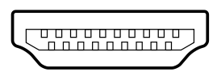

Grafikkarte
Die Grafikkarte steuert die Grafikausgabe des Computers. Die Grafikkarte rechnet die Daten, die sie von der CPD bekommt um, so das ein Monitor sie anzeigen kann. Es gibt sowohl Grafikkarten, die als extra Karten in den Pc eingebaut werden und solche, die als OnBoard also im Prozessor direkt verbaut sind.
Schnittstellen zum System
Die bekanntesten Hardwareschnittstellen für Grafikkarten sind PCI, AGP und PCI Express, früher waren auch ISA oder VESA Local Bus gängig. Diese Schnittstellen sind entweder Bussysteme oder Direktverbindungen (AGP, PCI Express), die den Buscontroller mit der Grafikkarte verbinden.
Grafikspeicher
Der Grafikspeicher dient zur Ablage derim Grafikprozessor(GPU) verarbeiteten Daten sowie als Bildspeicher. Dessen Größe bestimmt die maximale Farbtiefe und Bildschirmaufläösung. Früher kam man mit Grafikkarten mit einer Größe von 8MB aus, heute werden Grafikkarten selten mit weniger als 128MB ausgeliefert, zumeist werden Grafikkarten heute mit 1024 oder mehr Speicher ausgeliefert.
Bei OnBoard Grafikkarten wird meist der Hauptspeicher des Systems als Grafikspeicher genutzt, das wird als Shared Memory bezeichnet. Der Zugriff erfolgt dann über das Bussystem und es ist deutlich langsamer.
Grafikprozessor
Der Grafikprozessor dient zur Berechnung der Bildschirmausgabe.
Die erste 3D-beschleunigung kam mitte der 1990er auf den Markt. Diese GPUs waren in der lage, einige Effekte und dreiecksbasierte Algorithmen und Antialiasing selbstständig durchzuführen. Heutige GPUS sind den heutigen CPUs weit überlegen. Sie werden zum Beispiel verwendet, um Supercomputer zu bauen oder auch, um Brute-Force-Attacks schnell durchführen zu können.
Schnittstellen
| Display Port |
|
DisplayPort ist ein relativ neuer Verbindungsstandard für Bild- und Tonsignale. |
| DVI-Out |
|
DVI-Out liefert ein digitales Signal und damit die beste erreichbare Bildqualität an Bildschirmen mit DVi-Eingang. |
| Mini-DVI |
|
So wie DVI-Out nur kleiner und somit für Laptops und Netbooks geeignet. |
| HDMI-Out |
 |
HDMI hat sich seit 2007 auch in Grafikkarten etabliert. Hier wird das Videosignal ebenfalls digital und gegebenenfalls mit HDCP verschlüsselt ausgegeben. Über HDMI können auch DVI-D-Signale übertragen werden, womit DVI-Geräte kompatibel zu HDMI sind. |
| VGA-Out |
|
An einer 15-poligen D-Sub-Buchse wird ein analoges RGB-Signal ausgegeben. |
| Mini-VGA |
|
So wie VGA-Out nur kleiner und somit für Laptops geeignet |
| TV-Out |
 |
Der als Cinch- oder S-Video-Buchse ausgeführte TV-Ausgang kann mit einem Fernseher oder Projektor verbunden werden. Man kann so mit mehreren Bildschirmen (PC-Bildschirm + Fernseher) arbeiten. |